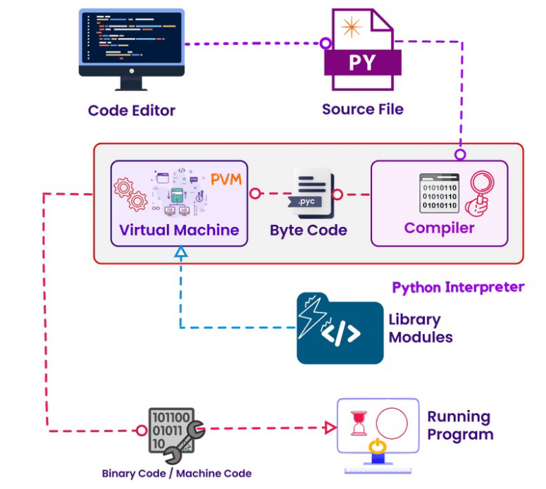

Programmi scritti in linguaggio di alto livello devono essere tradotti in linguaggio macchina per essere eseguiti. Ci sono due tipi di approcci alla traduzione del codice.
Compilatori: traducono programmi scritti in linguaggio di alto livello in un programma separato, scritto in linguaggio macchina.
Un programma scritto in linguaggio macchina può essere eseguito in qualunque altro momento, non è necessaria una seconda ricompilazione.
Il risultato finale è un file eseguibile composta da linguaggio macchina, comprensibile direttamente dal processore.
interpretati*: traducono ed eseguono le istruzioni di un programma scritto in linguaggio di alto livello.
Il codice viene letto ed eseguito riga per riga da un altro programma chiamato interprete proprio mentre il software è in funzione.
Non viene realizzato un programma separato scritto in linguaggio macchina.
1.1.1 Come funziona Python

immagine1
1.1.2 Interprete Python
L’implementazione di riferimento dell’interprete Python è CPython, che è scritto sia in C che in Python stesso.
Non converte il codice sorgente in istruzioni in linguaggio macchina ma trasforma l’intero codice in qualcosa chiamato byte code.
All’interno dell’interprete Python avviene comunque una compilazione, ma tale compilazione non converte l’intero codice in linguaggio macchina o assembly come avviene in linguaggi compilati come C/C++.
N.B: byte code è istruzioni assembly non sono la stessa cosa.
Il byte code viene generato all’interno di una virtual machine e per una virtual machine.
Il linguaggio assembly viene creato per una specifica CPU
Quando il compilatore Python legge il codice, lo traduce in byte code. Questo byte code è progettato per essere letto da un software chiamato Python Virtual Machine (PVM)
Il compilatore Python
Legge le istruzioni del programma scritto in Python
Verifica se le istruzioni sono formattate correttamente, cioè verifica la struttura sintattica di ogni riga del programma.
Se ci sono errori, la traduzione viene immediatamente interrotta e viene visualizzato un messaggio di errore.
Se non ci sono errori, il compilatore traduce le istruzioni di alto livello nel linguaggio intermedio equivalente che è il byte code.
Il byte code viene fornito al vero e proprio interprete Python, la cosiddetta Python Virtual Machine (PVM)
La PVM converte il byte code Python in istruzioni a livello macchina o in codice binario equivalente.
Se si verifica un errore in questa fase di interpretazione, la conversione si arresta mostrando un messaggio di errore.
L’interprete Python può esser utilizzato in due modalità:
Interactive mode: scrivere le istruzioni Python ed eseguirle una alla volta.
Script mode: scrivere tutte le istruzioni e salvarle in uno script Python da eseguire in un secondo momento.
1.1.3 Interactive mode
Quando eseguiamo Python in interactive mode, utilizziamo un prompt dei comandi:
L’interprete rimane in attesa di istruzioni Python da scrivere.
Il prompt dei comandi riappare dopo l’esecuzione dell’istruzione precedente.
Se l’istruzione non è corretta saranno mostrati eventuali messaggi di errore.
Questa modalità è un buon modo per iniziare a capire Python.
1.1.4 Script mode
Dobbiamo utilizzare la script mode per eseguire un intero programma Python. Quindi dobbiamo salvare l’insieme delle istruzioni Python in un file con estensione .py (raccomandato ma non necessario) es eseguire da terminale il file Python invocando l’interprete:
python filename.py
L’interprete Python valuterà passo passo tutte le istruzioni scritte nello script.
In questa modalità vengono forniti i classici meccanismi per ottenere argomenti da linea di comando e/o redirezione di I/O.
Python possiede anche un meccanismo per consentire ai programmi Python di agire sia da script che da modulo da importare es essere usato da latri programmi Python.
1.2 Byte code
I file file.pyc sono file byte code compilati che vengono generati dall’interprete Python quando uno script Python viene importato o eseguito.
Tali file possono esser eseguiti direttamente dall’interprete, senza la necessitò di ricompilare il codice sorgente a ogni esecuzione dello script. In tal modo possiamo ottenere tempi di esecuzione degli script più rapidi.
Per ottenere direttamente il file .pyc a partire da un file .py possiamo eseguire:
python-m compileall filename.py
Alternativamente, per poter leggere effettivamente il contenuto del file .pyc dobbiamo usare un altro stratagemma, il file è binario quindi non possiamo leggerlo direttamente.
Utilizziamo un codice Python che mi permette di disassemblare il codice per ottenere il byte code.
Un programma Python è una sequenza di definizioni e comandi.
Le definizioni sono valutate.
I comandi sono eseguiti dall’interprete Python in una shell (terminal)
I comandi (statements) istruiscono l’interprete a fare qualcosa. Tali comandi possono essere digitati direttamente all’interno di una shell oppure immagazzinati in un file che viene letto dalla shell per esser valutato.
1.4 Tipi scalari e non scalari, Stringhe
1.4.1 Oggetti python
I programmi Python manipolano cosiddetti data objects. Tutto in Python viene considerato come un oggetto.
Gli oggetti hanno un tipo che definisce il genere di cose che il programma può fare su di essi. Il tipo viene inferito a tempo di esecuzione.
Inferire i tipi a tempo di esecuzione è sia un vantaggio, ma anche uno svantaggio poiché non posso conoscere a priori la validità delle interazioni di tale variabile.
Se proviamo a sommare una variabile con un’altra aventi un tipo per cui non è definita la somma, allora potremmo accorgerci di questo errore unicamente a tempo di esecuzione, se durante l’esecuzione l’interprete Python si trova ad eseguire quella specifica funzione.
I tipi possono essere:
scalari (tipi atomici, non possono essere divisi come int, float)
non scalari (hanno una struttura interna che può essere acceduta)
Inoltre esistono delle notazioni per informare l’interprete che un nume di variabile è utilizzato per solo un tipo di interazione.
Quindi staticamente stiamo imponendo che tale nome deve riferirsi ad una variabile di uno specifico tipo.
Tutti gli oggetti, oltre ad avere un proprio tipo specificato, sono anche Object, meccanismo simile al polimorfismo di Java anche se questo non è implementato in Python.
1.4.2 Tipi scalari
int - interi
float - numeri reali
bool - booleani
NoneType - tipo speciale e assume un solo valore, None
Possiamo utilizzare type() per vedere il tipo di un oggetto.
Type casting:
Possiamo convertire un oggetto di un tipo in un oggetto di altro tipo utilizzando delle apposite funzioni:
float(3) converte l’intero in un float
int(4.5) tronca il float in un intero
1.4.3 Stringhe
Sono degli oggetti che possono contenere lettere, caratteri speciali, spazi, numeri, etc.
Sono definite utilizzando doppio apice (quotation marks) o singolo apice (single quotes).
Inoltre è possibile concatenare stringhe ed eseguire operazioni su stringhe come definito nella documentazione Python.
hi ="hello world"hi2 ='hello world again'name ="pippo"greet = hi + namegreeting = hi +" "+ namesilly = hi +" "+ name *3print(hi)print(hi2)print(greet)print(greeting)print(silly)
hello world
hello world again
hello worldpippo
hello world pippo
hello world pippopippopippo
Possiamo pensare alle stringhe come una sequenza case-sensitive di caratteri.
Sono implementati inoltre le varie comparazioni tra stringhe attraverso gli operatori ==, <, >, etc.
len() è una funzione utilizzata per ottenere la lunghezza di una stringa passata come primo parametro
s ="abc"l =len(s)print(l)
3
Le parentesi quadre ci permettono di accedere in maniera indicizzata ad una stringa.
s ="abc"print(s[0])print(s[1])print(s[2])# print(s[3]) // erroreprint(s[-1])print(s[-2])print(s[-3])
a
b
c
c
b
a
Con gli indici negativi posso partire a valutare la stringa partendo dall’ultimo carattere.
Possiamo affettare le stringhe (slice) utilizzando la notazione [start:end:step].
Omettendo step l’interprete utilizza quello di default, ovvero 1.
Possiamo anche utilizzare solo la notazione :: per ottenere l’intera stringa.
s ="abcdefgh"print(s[3:6]) # prende i caratteri da 3 a 5print(s[3:6:2]) # prende i caratteri da 3 a 5 saltando di 2print(s[::]) # prende tutti i caratteriprint(s[::-1]) # prende tutti i caratteri ma inverte la stringa print(s[4:1:-2]) # prende i caratteri da 4 a 2 con passo -2
def
df
abcdefgh
hgfedcba
ec
Le stringhe sono “immutabili” → non possono essere modificate.
Per modificare una stringa, dobbiamo necessariamente assegnare alla variabile una nuova stringa.
Quindi la variabile non punterà più alla vecchia porzione di memoria in cui è contenuto la stringa.
Ed è compito dell’interprete gestire le stringhe memorizzate che sono orfane, ovvero per cui non è presente un puntatore.
Quindi sarà presente un Garbadge Collector che periodicamente marca come allocabili tutte le aree di memoria contenenti variabili immutabili per cui non si ha più un riferimento.
s ="Hello"# s[0] = 'y' # errore s ='y'+ s[1:]print(s)
yello
In questo scritp la variabile s viene legata ad un nuovo oggetto stringa mentre il vecchio verrà eliminato dalla memoria dal Garbadge Collector